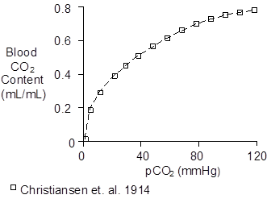
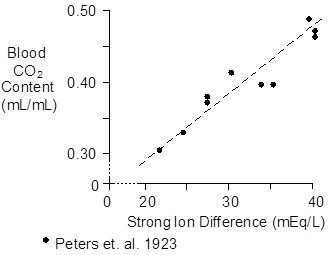
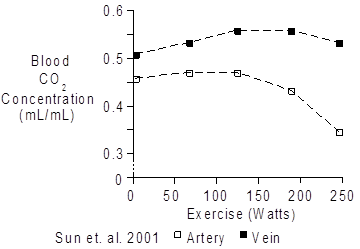
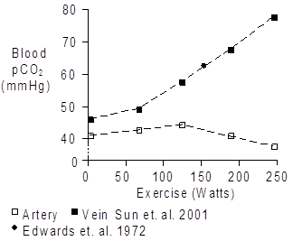
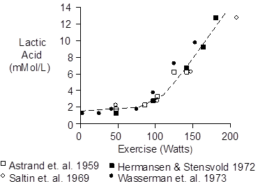

Data > CO2 Transport
Units
Total blood CO2 content is reported as mL (of STP gas) / mL (of blood) and also as mMol/L. In this analysis, we'll deviate slighly and use mMol/mL in the mathematics.
A mMol of gas occupies a standard volume of 22.4 mL. Multiply mL/mL by 44.6 to get mMol/L. Multiply by 0.0446 to get mMol/mL.
Square brackets [ ] indicated concentration.
SID means strong ion difference.
Overview
CO2 in the blood is mainly (88%) transported as bicarbonate [HCO3]. The remaining 12% is bound to proteins or in solution. As a first approximation, we'll consider bicarbonate transport only.
The concentration of HCO3 in the blood is a function of the partial pressure of CO2 (pCO2) as quantitated by CO2's disassociation curve. But [HCO3] is also a function of [SID].
To get an acceptable physiological representation, we must model both of these factors.
CO2 Dissociation Curve.
This relationship was accurately described a century ago.

This relationship might adequately be modeled using pCO2/(p50 + pCO2). Note that the function must be invertible and this one is.
Looking at the figure, I estimate that the p50 for HCO3 as a function of PCO2 is 32 mmHg.
Strong Ion Difference
Just as important as pCO2 is [SID], which modulates the pCO2 to [HCO3] equilibrium constant. A decreasing [SID] (acidosis) decreases [HCO3] for a given pCO2. This data comes from another early study.

The following model may be adequate.
[HCO3] = K * (pCO2/(p50 + pCO2))
K = k' * [SID]
p50 = 32
where K is a linear function of [SID]. We can now fit k' to a typical data set.
Normal Values
Normal values for venous blood.
pCO2 = 45 mmHg
[HCO3] = 0.0255 mMol/mL
[SID] = 0.040 mMol/mL
I popped these values into a spread sheet to get
k' = 1.09
Arterial Values
Normal values for arterial blood.
pCO2 = 40 mmHg
[HCO3] = 0.0239 mMol/mL
[SID] = 0.040 mMol/mL
For these values of pCO2 and [SID], the model predicts
[HCO3] = 0.0242
Exercise Values
[SID] and pCO2 are altered by exercise and both have a significant effect on [HCO3]. Venous and arterial values are altered in their own special ways.
Increased pCO2 tends to increase [HCO3] while decreased [SID] tends to decrease it.

On the venous side, the pCO2 and [SID] effects are roughly offsetting. On the arterial side, the [SID] effect lowers [HCO3] while the arterial pCO2 is close to normal.
On the venous side, pCO2 increases significantly. On the arterial side, ventilation takes care of the CO2 and the arterial values are close to normal.

[SID] decreases during exercise mainly due to lactic acid accumulation, which is proportional to the severity of the exercise.

Using this data, my best estimate for values at 200W is shown below.
pCO2 = 70 mmHg
[HCO3] = 0.0245 mMol/mL
[SID] = 0.026 mMol/mL
For these values of pCO2 and [SID], the model predicts
[HCO3] = 0.0195
Inverting The Model
[HCO3] = K * (pCO2/(p50 + pCO2))
K = k' * [SID]
p50 = 32
Forward expression inverts to
pCO2 = (p50 * [HCO3]) / (K - [HCO3])
K = k' * [SID]
p50 = 32
Valid for [HCO3] >= 0 and [HCO3] < k' * [SID]
For [HCO3] < 0 use pCO2 = 0
For [HCO3] >= k' * [SID] use pCO2 = PCO2_LARGE or 1000
Using The Model In Tissue
Tissue is qualitatively the same as blood but quantitatively different due to different SID's and intrinsic [HCO3]. The two cases are tissue in general and skeletal muscle.
Tissue In General
[HCO3-] = 0.016 mEq/mL
pCO2 = 45 mmHg
SID = 0.036 mEq/mL (see CellSID)
k' = 0.444
[HCO3] from Raichle. Brain Res. 166:413-417, 1979.
Skeletal Muscle
Sahlin JAP 45:474-480, 1978.
Sahlin Clin.Sci.Mol.Med. 53:459-466, 1977.
[HCO3-] = 0.010 mEq/mL
pCO2 = 45 mmHg
SID = 0.036mEq/mL
k' = 0.278
References
Åstrand, I., P.-O. Åstrand and K. Rodahl. Maximum heart rate during work in older men. J. Appl. Physiol. 14:562-566, 1959.
Christiansen, J., C.G. Douglas and J.S. Haldane. The absorption and dissociation of carbon dioxide by human blood. J. Physiol. 48:244-277, 1914.
Edwards, R.H.T., D.M. Denison, G. Jones, C.T.M. Davies and E.J.M. Campbell. Changes in mixed venous gas tensions at start of exercise in man. J. Appl. Physiol. 32:165-169, 1972.
Hermansen, L. and I. Stensvold. Production and removal of lactate during exercise in man. Acta Physiol. Scand. 86:191-201, 1972.
Peters, J.P., A.J. Eisenman and H.A. Bulger. Studies of the carbon dioxide absorptive curve of human blood. II. The nature of the curve representing the relation of pH to BHCO3. J. Biol. Chem. 55:709-716, 1923.
Saltin, B., L.H. Hartley, Å. Kilbom and I. Åstrand. Physical training in sedentary middle-aged and older men. II. Oxygen uptake, heart rate, and blood lactate concentration at submaximal and maximal exercise. Scand. J. Clin. Lab. Invest. 24:323-334, 1969.
Sun, X.-G., J.E. Hansen, W.W. Stringer, H. Ting and K. Wasserman. Carbon dioxide pressure-concentration relationship in arterial and mixed venous blood during exercise. J. Appl. Physiol. 90:1798-1810, 2001.
Wasserman, K., B.J. Whipp, S.N. Koyal and W.L. Beaver. Anaerobic threshold and respiratory gas exchange during exercise. J. Appl. Physiol. 35:236-243, 1973.